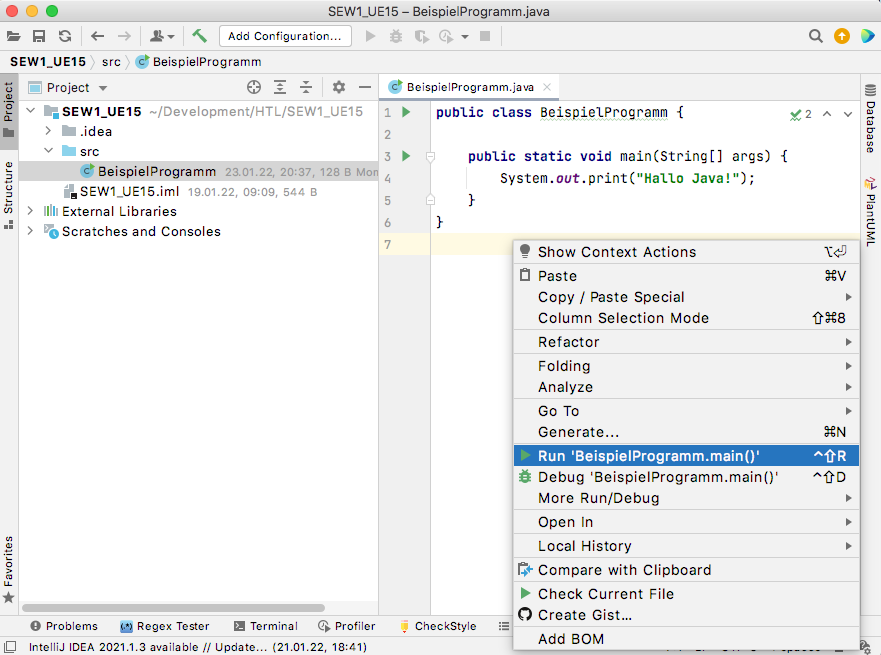
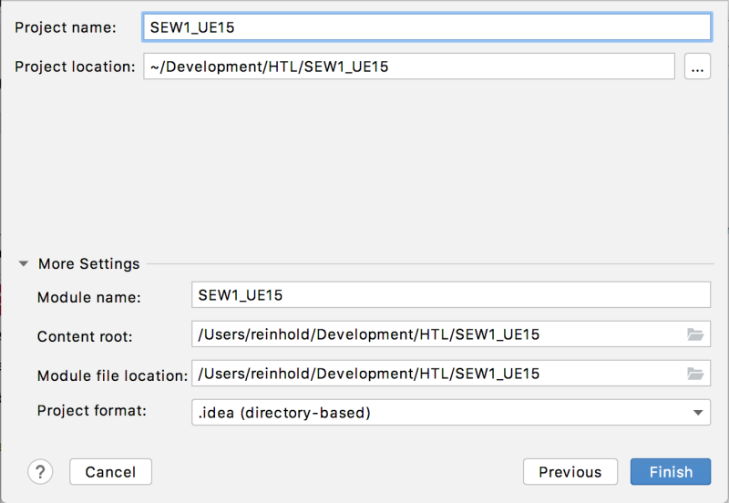
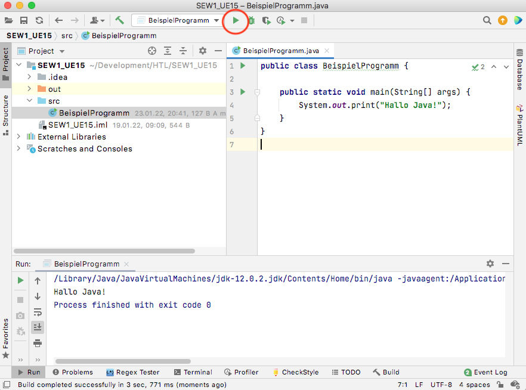

Processing ist eine Bibliothek, die uns viele Befehle zu Verfügung stellt, die es in Java ohne Processing nicht gibt. So sind die gesamten Zeichenbefehle in dieser Art nur in Processing vorhanden.
Processing ermöglicht auch einen Programmaufbau, der rein mit Java so nicht möglich ist. Die Methoden
setup() und draw() gibt es z.B. so nicht in Java.
Prinzipiell können wir Code (sowohl für Processing, wie auch für pures Java) mit jedem beliebigen Texteditor schreiben, der "rein" den Text ohne zusätzliche Formatierungen abspeichert. Üblicherweise verwendet man aber IDEs, die sehr viele nützliche Features zu Verfügung stellen (z.B. einfaches Ausführen des Programms über einen Button, automatische Codevervollständigung, einfache Verwaltung mehrerer Dateien, viele praktisches Editiermöglichkeiten und vieles vieles mehr).
Auch für Processing haben wir schon eine IDE verwendet. Für Java verwenden wir ab sofort eine sehr mächtige IDE, die auch im professionellen Bereich zum Einsatz kommt: IntelliJ der Firma Jetbrains.
IntelliJ gibt es in einer freien Community Version, die für unsere Zwecke vollständig ausreicht. Als Schüler*in der HTL kann man auch die Ultimate-Version (und viele andere Jetbrains Produkte) nutzen, wenn man sich mit der Schul-E-Mail-Adresse über folgendes Formular für eine Bildungslizenz anmeldet.
Zu Beginn legen wir ein neues Projekt an. Wenn du dein erstes Projekt anlegst, kann es sein, dass IntelliJ keine SDK auf deinem Rechner findet. Ein Java SDK (Software Development Kit) wird benötigt um deinen Sourcecode in Java-Bytecode zu übersetzen. IntelliJ kann für dich automatisch eine aktuelle SDK herunterladen

Klicke einfach auf den "Weiter"-Button bis du einen Projektnamen wählen kannst und wo das Projekt gespeichert werden soll.
Fürs Erste erstellen wir für jede Übung ein neues Projekt.

Alle Sourcedateien kommen in den Ordner src. In diesem Ordner müssen wir für jedes "Programm" eine Java Klasse erstellen. Wir erstellen eine Java Klasse mit Rechtsklick auf den src-Ordner ➔ Neu ➔Java Klasse. Die Klasse können wir z.B. "UE15_task1" nennen. Klassen beginnen laut Namenskonventionen immer mit einem Großbuchstaben.
Statt setup() wird zu Beginn des Programms die Methode
public static void main(String[] args)
aufgerufen. Das muss man sich nicht auswendig merken, denn es reicht main einzugeben und IntelliJ
vervollständigt automatisch die Methode.
Auch die Processing-Methode draw() gibt es in reinem Java nicht mehr.
Generell schreiben wir im Moment vor jeder Methode zusätzlich noch die Wörter public static. Wir
lernen in der zweiten Klasse, was sie bedeuten - für den Moment verwenden wir sie einfach einmal, ohne die
Bedeutung zu verstehen.
Beispiele:
public static float calculateArea(float width, float length) {...}
public static void printWelcome() {...}
Auch sind sehr viel der Befehle, die wir von der Processing Reference kennen, nicht mehr verfügbar. In Java gibt es standardmäßig keine Zeichenfläche und Zeichenbefehle.
Andererseits stellt uns die Java API eine riesige Anzahl an "Befehlen" zu Verfügung, von denen wir einige wenige im Laufe der Jahre behandeln werden.
Der wichtigste Unterschied im Moment ist, dass die Befehle print() und println() etwas
anders geschrieben werden müssen, nämlich: System.out.print() bzw.
System.out.println(). Schreibt man in IntelliJ sout und drückt Enter oder
Tabulator, wird die Eingabe automatisch zu System.out.println() vervollständigt.
Möchte man das Programm das erste Mal ausführen, klickt man am einfachsten rechts entweder in die Klasse oder auf den Filenamen und wählt "Run [Programmname].main()"
Für eine weitere Ausführung kann man dann auf den grünen "Run"-Button oben im Menü klicken.
